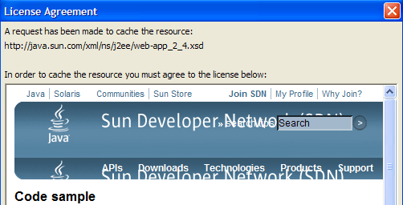
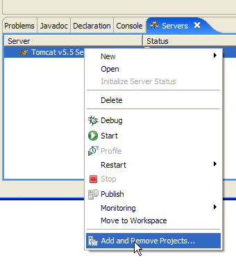
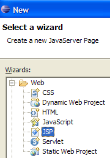
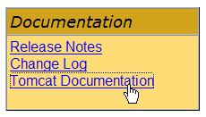
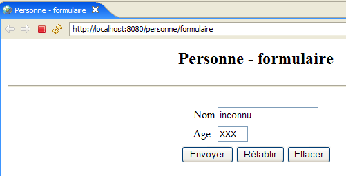
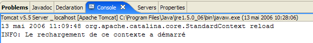
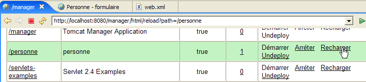

3. Grundlagen der Webentwicklung in Java
Wir werden nun die Entwicklung dynamischer Webanwendungen behandeln, d. h. Anwendungen, bei denen die an den Benutzer gesendeten HTML-Seiten von Programmen generiert werden.
3.1. Erstellen eines Webprojekts in Eclipse
Wir werden unsere erste Webanwendung mit Eclipse/Tomcat entwickeln. Dabei folgen wir einem ähnlichen Ablauf wie beim Erstellen einer Webanwendung ohne Eclipse. Bei laufendem Eclipse erstellen wir ein neues Projekt:

das wir als dynamisches Webprojekt definieren:

Auf der ersten Seite des Erstellungsassistenten geben wir den Projektnamen [1] und den Speicherort [2] an:

Auf der zweiten Seite des Assistenten übernehmen wir die Standardwerte:

Auf der letzten Seite des Assistenten werden wir aufgefordert, den Kontext der Anwendung festzulegen [3]:

Sobald der Assistent durch Klicken auf [Fertigstellen] bestätigt wurde, stellt Eclipse eine Verbindung zur Website [http://java.sun.com] her, um bestimmte Dokumente abzurufen, die es zwischenspeichern möchte, um unnötigen Netzwerkverkehr zu vermeiden. Anschließend wird eine Lizenzvereinbarung angefordert:

Wir akzeptieren sie. Eclipse erstellt das Webprojekt. Um es anzuzeigen, verwendet es eine Umgebung, eine sogenannte Perspektive, die sich von der für ein herkömmliches Java-Projekt verwendeten unterscheidet:

Die mit einem Webprojekt verbundene Perspektive ist die J2EE-Perspektive. Wir akzeptieren sie, um zu sehen... Das Ergebnis sieht wie folgt aus:

Die J2EE-Perspektive ist für einfache Webprojekte eigentlich unnötig komplex. In diesem Fall reicht die Java-Perspektive aus. Um darauf zuzugreifen, verwenden wir die Option [Fenster -> Perspektive öffnen -> Java]:

src: enthält den Java-Code für die Klassen der Anwendung sowie die Dateien, die sich im Klassenpfad der Anwendung befinden müssen.
build/classes (nicht abgebildet): enthält die .class-Dateien der kompilierten Klassen sowie eine Kopie aller Nicht-.java-Dateien, die sich in src befinden. Eine Webanwendung verwendet häufig sogenannte „Ressourcendateien“, die sich im Klassenpfad der Anwendung befinden müssen, d. h. in der Reihe von Verzeichnissen, die die JVM durchsucht, wenn die Anwendung auf eine Klasse verweist, sei es während der Kompilierung oder zur Laufzeit. Eclipse stellt sicher, dass das Verzeichnis build/classes Teil des Web-Klassenpfads ist. „Ressourcendateien“ werden im Ordner src abgelegt, da Eclipse sie automatisch nach build/classes kopiert.
WebContent: enthält die Ressourcen der Webanwendung, die nicht im Klassenpfad der Anwendung enthalten sein müssen.
WEB-INF/lib: enthält die von der Webanwendung benötigten .jar-Dateien.
Sehen wir uns den Inhalt der Datei [WEB-INF/web.xml] an, die die Anwendung [person] konfiguriert:
<?xml version="1.0" encoding="UTF-8"?>
<web-app id="WebApp_ID" version="2.4" xmlns="http://java.sun.com/xml/ns/j2ee" xmlns:xsi="http://www.w3.org/2001/XMLSchema-instance" xsi:schemaLocation="http://java.sun.com/xml/ns/j2ee http://java.sun.com/xml/ns/j2ee/web-app_2_4.xsd">
<display-name> personne</display-name>
<welcome-file-list>
<welcome-file>index.html</welcome-file>
<welcome-file>index.htm</welcome-file>
<welcome-file>index.jsp</welcome-file>
<welcome-file>default.html</welcome-file>
<welcome-file>default.htm</welcome-file>
<welcome-file>default.jsp</welcome-file>
</welcome-file-list>
</web-app>
Wir sind dieser Art von Konfiguration bereits begegnet, als wir in Abschnitt 2.3.4 die Erstellung von Begrüßungsseiten behandelt haben. Diese Datei dient lediglich dazu, eine Reihe von Begrüßungsseiten zu definieren. Wir behalten nur die erste davon bei. Die Datei [web.xml] sieht nun wie folgt aus:
<?xml version="1.0" encoding="UTF-8"?>
<web-app id="WebApp_ID" version="2.4"
xmlns="http://java.sun.com/xml/ns/j2ee"
xmlns:xsi="http://www.w3.org/2001/XMLSchema-instance"
xsi:schemaLocation="http://java.sun.com/xml/ns/j2ee http://java.sun.com/xml/ns/j2ee/web-app_2_4.xsd">
<display-name>personne</display-name>
<welcome-file-list>
<welcome-file>index.html</welcome-file>
</welcome-file-list>
</web-app>
Der Inhalt der obigen XML-Datei muss den Syntaxregeln entsprechen, die in der Datei definiert sind, auf die das Attribut [xsi:schemaLocation] des öffnenden <web-app>-Tags verweist. Diese Datei befindet sich unter [http://java.sun.com/xml/ns/j2ee/web-app_2_4.xsd]. Es handelt sich um eine XML-Datei, auf die direkt über einen Webbrowser zugegriffen werden kann. Wenn der Browser aktuell genug ist, kann er eine XML-Datei anzeigen:

Eclipse versucht, das XML-Dokument anhand der .xsd-Datei zu validieren, die im Attribut [xsi:schemaLocation] des öffnenden <web-app>-Tags angegeben ist. Dazu sendet es eine Netzwerkanfrage. Befindet sich Ihr Computer in einem privaten Netzwerk, müssen Sie Eclipse mitteilen, welchen Rechner es zum Verlassen des privaten Netzwerks verwenden soll – den sogenannten HTTP-Proxy. Dies erfolgt über die Option [Fenster -> Einstellungen -> Internet]:

Aktivieren Sie das Kontrollkästchen (1), wenn Sie sich in einem privaten Netzwerk befinden. Geben Sie in (2) den Namen des Rechners ein, der den HTTP-Proxy hostet, und in (3) dessen Listening-Port. Geben Sie schließlich in (4) die Rechner an, die den Proxy umgehen sollen – also Rechner, die sich im selben privaten Netzwerk befinden wie der Rechner, an dem Sie gerade arbeiten.
Wir erstellen nun die Datei [index.html] für die Startseite.
3.2. Erstellen einer Startseite
Klicken Sie mit der rechten Maustaste auf den Ordner [WebContent] und wählen Sie [Neu -> Sonstiges]:

Wählen Sie den Typ [HTML] aus und klicken Sie auf [Weiter] ->

Wählen Sie oben in (1) oder (2) den übergeordneten Ordner [WebContent] aus und geben Sie dann in (3) den Namen der zu erstellenden Datei an. Fahren Sie anschließend mit der nächsten Seite des Assistenten fort:

Mit (1) können wir eine HTML-Datei erstellen, die bereits mit (2) vorbelegt ist. Wenn wir (1) deaktivieren, erstellen wir eine leere HTML-Datei. Wir lassen (1) aktiviert, um von einer Code-Vorlage zu profitieren. Wir schließen den Assistenten ab, indem wir auf [Fertigstellen] klicken. Die Datei [index.html] wird dann erstellt:

mit folgendem Inhalt:
<!DOCTYPE HTML PUBLIC "-//W3C//DTD HTML 4.01 Transitional//EN">
<html>
<head>
<meta http-equiv="Content-Type" content="text/html; charset=ISO-8859-1">
<title>Insert title here</title>
</head>
<body>
</body>
</html>
Wir ändern diese Datei wie folgt:
<!DOCTYPE HTML PUBLIC "-//W3C//DTD HTML 4.01 Transitional//EN">
<html>
<head>
<meta http-equiv="Content-Type" content="text/html; charset=ISO-8859-1">
<title>Application personne</title>
</head>
<body>
Application personne active...
<br>
<br>
Vous êtes sur la page d'accueil
</body>
</html>
3.3. Testen der Startseite
Falls diese nicht angezeigt wird, rufen Sie die Ansicht [Server] über die Option [Fenster -> Ansicht anzeigen -> Sonstige -> Server] auf und klicken Sie dann mit der rechten Maustaste auf den Tomcat 5.5-Server:

Mit der Option [Objekte hinzufügen und entfernen] oben können Sie Webanwendungen zum Tomcat-Server hinzufügen oder von diesem entfernen:

Die von Eclipse erkannten Webprojekte sind unter (1) aufgelistet. Sie können sie über (2) beim Tomcat-Server registrieren. Beim Tomcat-Server registrierte Webanwendungen werden unter (4) angezeigt. Über (3) können Sie die Registrierung aufheben. Registrieren wir nun das Projekt [person]:

Schließen Sie dann den Registrierungsassistenten ab, indem Sie auf [Fertigstellen] klicken. Die Ansicht [Server] zeigt an, dass das Projekt [person] auf Tomcat registriert wurde:

Starten wir nun den Tomcat-Server:
 |  |
Starten Sie den Webbrowser:

Geben Sie dann die URL [http://localhost:8080/personne] ein. Diese URL ist die Startseite der Webanwendung. Es wird kein Dokument angefordert. In diesem Fall wird die Startseite der Anwendung angezeigt. Falls diese nicht existiert, wird eine Fehlermeldung ausgegeben. Hier existiert die Startseite. Es handelt sich um die Datei [index.html], die wir zuvor erstellt haben. Das Ergebnis sieht wie folgt aus:

Es entspricht den Erwartungen. Nun verwenden wir einen Browser außerhalb von Eclipse und rufen dieselbe URL auf:

Die Webanwendung [person] ist somit auch außerhalb von Eclipse zugänglich.
3.4. Erstellen eines HTML-Formulars
Wir erstellen nun ein statisches HTML-Dokument [form.html] im Ordner [person]:

Befolgen Sie dazu die in Abschnitt 3.2, Seite 33, beschriebene Vorgehensweise. Der Inhalt sieht wie folgt aus:
<!DOCTYPE HTML PUBLIC "-//W3C//DTD HTML 4.01 Transitional//EN">
<html>
<head>
<title>Personne - formulaire</title>
</head>
<body>
<center>
<h2>Personne - formulaire</h2>
<hr>
<form action="" method="post">
<table>
<tr>
<td>Nom</td>
<td><input name="txtNom" value="" type="text" size="20"></td>
</tr>
<tr>
<td>Age</td>
<td><input name="txtAge" value="" type="text" size="3"></td>
</tr>
</table>
<table>
<tr>
<td><input type="submit" value="Envoyer"></td>
<td><input type="reset" value="Retablir"></td>
<td><input type="button" value="Effacer"></td>
</tr>
</table>
</form>
</center>
</body>
</html>
Der obige HTML-Code entspricht dem folgenden Formular:

HTML-Typ | Name | HTML-Code | Rolle | |
<input type="text"> | txtName | Zeile 14 | Name eingeben | |
<input type="text"> | txtAge | Zeile 18 | Altersangabe | |
<input type="submit"> | Zeile 23 | Sende die eingegebenen Werte an den Server unter der URL /person1/main | ||
<input type="reset"> | Zeile 24 | um die Seite in den Zustand zurückzusetzen, in dem sie ursprünglich vom Browser empfangen wurde | ||
<input type="button"> | Zeile 25 | um den Inhalt der Eingabefelder [1] und [2] zu löschen |
Speichern wir das Dokument im Ordner <person>/WebContent. Starten Sie Tomcat, falls erforderlich. Rufen Sie in einem Browser die URL http://localhost:8080/personne/formulaire.html auf:

Die Client-Server-Architektur dieser einfachen Anwendung sieht wie folgt aus:

Der Webserver befindet sich zwischen dem Benutzer und der Webanwendung und wurde hier nicht dargestellt. [formulaire.html] ist ein statisches Dokument, das bei jeder Client-Anfrage denselben Inhalt zurückgibt. Ziel der Webprogrammierung ist es, Inhalte zu generieren, die auf die Anfrage des Clients zugeschnitten sind. Diese Inhalte werden dann programmgesteuert erzeugt. Eine Lösung besteht darin, anstelle der statischen HTML-Datei eine JSP (Java Server Page) zu verwenden. Genau das werden wir nun untersuchen.
3.5. Erstellen einer JSP-Seite
Literatur [ref1]: Kapitel 1, Kapitel 2: 2.2, 2.2.1, 2.2.2, 2.2.3, 2.2.4
Die bisherige Client/Server-Architektur wird wie folgt umgestaltet:

Eine JSP-Seite ist eine Art parametrisierte HTML-Seite. Bestimmte Elemente der Seite erhalten ihre Werte erst zur Laufzeit. Diese Werte werden vom Programm berechnet. Wir haben es also mit einer dynamischen Seite zu tun: Aufeinanderfolgende Anfragen an die Seite können unterschiedliche Antworten liefern. Als Antwort bezeichnen wir hier die vom Browser des Clients angezeigte HTML-Seite. Letztendlich erhält der Browser immer ein HTML-Dokument. Dieses HTML-Dokument wird vom Webserver aus der JSP-Seite generiert, die als Vorlage dient. Ihre dynamischen Elemente werden zum Zeitpunkt der Generierung des HTML-Dokuments durch ihre tatsächlichen Werte ersetzt.
Um eine JSP-Seite zu erstellen, klicken Sie mit der rechten Maustaste auf den Ordner [WebContent] und wählen Sie die Option [Neu -> Sonstiges]:

Wir wählen den Typ [JSP] aus und klicken auf [Weiter] ->

Oben wählen wir in (1) oder (2) den übergeordneten Ordner [WebContent] aus und geben dann in (3) den Namen der zu erstellenden Datei an. Sobald dies erledigt ist, fahren wir mit der nächsten Seite des Assistenten fort:

Mit (1) können wir eine JSP-Datei erstellen, die bereits mit (2) vorbelegt ist. Wenn wir (1) deaktivieren, erstellen wir eine leere JSP-Datei. Wir lassen (1) aktiviert, um von einer Codevorlage zu profitieren. Wir schließen den Assistenten ab, indem wir auf [Fertigstellen] klicken. Die Datei [formulaire.jsp] wird dann erstellt:

mit folgendem Inhalt:
<%@ page language="java" contentType="text/html; charset=ISO-8859-1" pageEncoding="ISO-8859-1"%>
<!DOCTYPE HTML PUBLIC "-//W3C//DTD HTML 4.01 Transitional//EN">
<html>
<head>
<meta http-equiv="Content-Type" content="text/html; charset=ISO-8859-1">
<title>Insert title here</title>
</head>
<body>
</body>
</html>
Zeile 1 zeigt an, dass es sich um eine JSP-Seite handelt. Wir wandeln den obigen Text wie folgt um:
<%@ page language="java" contentType="text/html; charset=ISO-8859-1"
pageEncoding="ISO-8859-1"%>
<!DOCTYPE HTML PUBLIC "-//W3C//DTD HTML 4.01 Transitional//EN">
<%
// on récupère les paramètres
String nom=request.getParameter("txtNom");
if(nom==null) nom="inconnu";
String age=request.getParameter("txtAge");
if(age==null) age="xxx";
%>
<html>
<head>
<meta http-equiv="Content-Type" content="text/html; charset=ISO-8859-1">
<title>Personne - formulaire</title>
</head>
<body>
<center>
<h2>Personne - formulaire</h2>
<hr>
<form action="" method="post">
<table>
<tr>
<td>Nom</td>
<td><input name="txtNom" value="<%= nom %>" type="text" size="20"></td>
</tr>
<tr>
<td>Age</td>
<td><input name="txtAge" value="<%= age %>" type="text" size="3"></td>
</tr>
</table>
<table>
<tr>
<td><input type="submit" value="Envoyer"></td>
<td><input type="reset" value="Rétablir"></td>
<td><input type="button" value="Effacer"></td>
</tr>
</table>
</form>
</center>
</body>
</html>
Das ursprünglich statische Dokument ist nun durch die Einbindung von Java-Code dynamisch geworden. Bei dieser Art von Dokument gehen wir immer wie folgt vor:
- Wir platzieren Java-Code am Anfang des Dokuments, um die für die Anzeige des Dokuments erforderlichen Parameter abzurufen. Diese befinden sich häufig im Request-Objekt. Dieses Objekt repräsentiert die Anfrage des Clients. Es kann mehrere Servlets und JSP-Seiten durchlaufen haben, die es möglicherweise erweitert haben. Hier kommt es direkt vom Browser.
- Es folgt der HTML-Code. Dieser gibt in der Regel einfach Variablen aus, die zuvor im Java-Code berechnet wurden, und zwar mithilfe von <%= variable %>-Tags. Beachten Sie hier, dass das =-Zeichen direkt neben dem %-Zeichen steht. Dies ist eine häufige Fehlerquelle.
Was macht das vorangegangene dynamische Dokument?
- Zeilen 6–9: Es ruft zwei Parameter aus der Anfrage ab, die [txtNom] und [txtAge] heißen, und weist ihre Werte den Variablen [nom] (Zeile 6) und [age] (Zeile 8) zu. Wenn es die Parameter nicht findet, weist es den zugehörigen Variablen Standardwerte zu.
- Es zeigt die Werte der beiden Variablen [name, age] im folgenden HTML-Code an (Zeilen 25 und 29).
Führen wir einen ersten Test durch. Starten Sie gegebenenfalls Tomcat und rufen Sie dann mit einem Browser die URL http://localhost:8080/personne/formulaire.jsp auf:

Das Dokument form.jsp wurde ohne Übergabe von Parametern aufgerufen. Daher wurden die Standardwerte angezeigt. Rufen wir nun die URL http://localhost:8080/personne/formulaire.jsp?txtNom=martin&txtAge=14 auf:

Diesmal haben wir die Parameter txtNom und txtAge an die Seite form.jsp übergeben, was deren Erwartung entspricht. Daraufhin wurden sie angezeigt. Wir wissen, dass es zwei Methoden gibt, um Parameter an eine Webseite zu übergeben: GET und POST. In beiden Fällen werden die übergebenen Parameter im vordefinierten Request-Objekt gespeichert. Hier wurden sie mit der GET-Methode übergeben.
3.6. Erstellen eines Servlets
Literatur [ref1]: Kapitel 1, Kapitel 2: 2.1, 2.1.1, 2.1.2, 2.3.1
In der vorherigen Version wurde die Anfrage des Clients von einer JSP-Seite verarbeitet. Beim ersten Aufruf dieser Seite erstellt der Webserver – in diesem Fall Tomcat – aus der Seite eine Java-Klasse und kompiliert sie. Das Ergebnis dieser Kompilierung verarbeitet letztendlich die Anfrage des Clients. Die aus der JSP-Seite generierte Klasse ist ein Servlet, da sie die Schnittstelle [javax.Servlet] implementiert:

Die Client-Anfrage kann von jeder Klasse bearbeitet werden, die diese Schnittstelle implementiert. Wir werden nun eine solche Klasse erstellen: ServletFormulaire. Die bisherige Client/Server-Architektur wird wie folgt umgestaltet:

Bei der JSP-basierten Architektur wurde das an den Client gesendete HTML-Dokument vom Webserver aus der JSP-Seite generiert, die als Vorlage diente. Hier wird das an den Client gesendete HTML-Dokument vollständig vom Servlet generiert.
3.6.1. Erstellen des Servlets
Klicken Sie in Eclipse mit der rechten Maustaste auf den Ordner [src] und wählen Sie die Option zum Erstellen einer Klasse:

Legen Sie anschließend die Eigenschaften der zu erstellenden Klasse fest:

Geben Sie unter (1) einen Paketnamen ein; unter (2) den Namen der zu erstellenden Klasse. Diese Klasse muss die unter (3) angegebene Klasse erweitern. Sie müssen den vollständigen Namen der Klasse nicht selbst eingeben. Über die Schaltfläche (4) können Sie auf die Klassen zugreifen, die sich derzeit im Klassenpfad der Webanwendung befinden:

Geben Sie in (1) den Namen der gesuchten Klasse ein. In (2) werden die Klassen im Klassenpfad angezeigt, deren Namen die in (1) eingegebene Zeichenfolge enthalten.
Nach Bestätigung des Erstellungsassistenten wird das Webprojekt [person] wie folgt geändert:

Die Klasse [ServletFormulaire] wurde mit einem Code-Skelett erstellt:

Der obige Screenshot zeigt, dass Eclipse in der Zeile, in der die Klasse deklariert wird, eine [Warnung] anzeigt. Klicken Sie auf das Symbol (Glühbirne), das auf diese [Warnung] hinweist:

Nachdem Sie auf (1) geklickt haben, werden in (2) Lösungen zur Beseitigung der [Warnung] vorgeschlagen. Wenn Sie eine davon auswählen, wird in (3) die Codeänderung angezeigt, die diese Auswahl zur Folge hat.
Java 1.5 führte Änderungen an der Java-Sprache ein, und was in einer früheren Version korrekt war, kann nun [Warnungen] auslösen. Diese weisen nicht auf Fehler hin, die die Kompilierung der Klasse verhindern würden. Sie dienen dazu, den Entwickler auf Bereiche im Code aufmerksam zu machen, die verbessert werden könnten. Die aktuelle [Warnung] weist darauf hin, dass eine Klasse eine Versionsnummer haben sollte. Diese wird für die Serialisierung/Deserialisierung von Objekten verwendet, d. h. wenn ein Java-.class-Objekt im Speicher in eine Bitfolge umgewandelt werden muss, die sequenziell in einem Schreibstrom gesendet wird, oder umgekehrt, wenn ein Java-.class-Objekt im Speicher aus einer Bitfolge erstellt werden muss, die sequenziell in einem Lesestrom gelesen wird. All dies ist weit entfernt von unseren aktuellen Anliegen. Wir werden den Compiler daher bitten, diese Warnung zu ignorieren, indem wir die Option [Add @SuppressWarnings ...] wählen. Der Code sieht dann wie folgt aus:

Es gibt keine [Warnungen] mehr. Die hinzugefügte Zeile wird als „Annotation“ bezeichnet, ein Konzept, das in Java 1.5 eingeführt wurde. Wir werden diesen Code später vervollständigen.
3.6.2. Classpath eines Eclipse-Projekts
Der Klassenpfad einer Java-Anwendung ist die Menge an Ordnern und .jar-Dateien, die durchsucht werden, wenn der Compiler die Anwendung kompiliert oder wenn die JVM sie ausführt. Diese beiden Klassenpfade sind nicht unbedingt identisch, da einige Klassen nur zur Laufzeit und nicht während der Kompilierung benötigt werden. Sowohl der Java-Compiler als auch die JVM verfügen über ein Argument, mit dem Sie den Klassenpfad der zu kompilierenden oder auszuführenden Anwendung angeben können. Eclipse übernimmt die Erstellung und Übergabe dieses Arguments an die JVM auf eine für den Benutzer mehr oder weniger transparente Weise.
Wie können Sie die Elemente des Klassenpfads eines Eclipse-Projekts ermitteln? Verwenden Sie die Option [<Projekt> / Build-Pfad / Build-Pfad konfigurieren]:

Dadurch wird der folgende Konfigurationsassistent angezeigt:

Auf der Registerkarte (1) [Libraries] können Sie die Liste der .jar-Dateien definieren, die Teil des Klassenpfads der Anwendung sind. Diese werden daher von der JVM durchsucht, wenn die Anwendung eine Klasse anfordert. Mit den Schaltflächen [2] und [3] können Sie Archive zum Klassenpfad hinzufügen. Über die Schaltfläche [2] können Sie Archive auswählen, die sich in den Ordnern der von Eclipse verwalteten Projekte befinden, während Sie über die Schaltfläche [3] beliebige Archive aus dem Dateisystem des Computers auswählen können.
Oben werden drei Bibliotheken angezeigt:
- [JRE-Systembibliothek]: die Basisbibliothek für Eclipse-Java-Projekte:

- [Tomcat v5.5 Runtime]: eine vom Tomcat-Server bereitgestellte Bibliothek. Sie enthält die für die Webentwicklung erforderlichen Klassen. Diese Bibliothek ist in jedem Eclipse-Webprojekt enthalten, das mit dem Tomcat-Server verknüpft wurde.

Es handelt sich um das Archiv [servlet-api.jar], das die Klasse [javax.servlet.http.HttpServlet] enthält, die Oberklasse der Klasse [ServletFormulaire], die wir gerade erstellen. Da sich dieses Archiv im Classpath der Anwendung befindet, konnte es im unten gezeigten Assistenten als Oberklasse vorgeschlagen werden.

Wäre dies nicht der Fall gewesen, wäre sie nicht in den Vorschlägen unter [2] erschienen. Wenn Sie also in diesem Assistenten auf eine übergeordnete Klasse verweisen möchten und diese nicht vorgeschlagen wird, bedeutet dies entweder, dass Sie den Klassennamen falsch geschrieben haben oder dass sich das Archiv, das sie enthält, nicht im Klassenpfad der Anwendung befindet.
- [Web-App-Bibliotheken] enthält die Archive, die sich im Ordner [WEB-INF/lib] des Projekts befinden. Hier ist der Ordner leer:

Die Archive im Klassenpfad des Eclipse-Projekts sind im Projekt-Explorer sichtbar. Zum Beispiel für das Webprojekt [person]:

Der Projekt-Explorer ermöglicht uns den Zugriff auf den Inhalt dieser Archive:

Wie oben gezeigt, können wir sehen, dass das Archiv [servlet-api.jar] die Klasse [javax.servlet.http.HttpServlet] enthält.
3.6.3. Servlet-Konfiguration
Literatur [ref1]: Kapitel 2: 2.3, 2.3.1, 2.3.2, 2.3.3, 2.3.4
Die Datei [WEB-INF/web.xml] dient zur Konfiguration der Webanwendung:

Für das Projekt [person] sieht diese Datei derzeit wie folgt aus (siehe Seite 32):
<?xml version="1.0" encoding="UTF-8"?>
<web-app id="WebApp_ID" version="2.4"
xmlns="http://java.sun.com/xml/ns/j2ee"
xmlns:xsi="http://www.w3.org/2001/XMLSchema-instance"
xsi:schemaLocation="http://java.sun.com/xml/ns/j2ee http://java.sun.com/xml/ns/j2ee/web-app_2_4.xsd">
<display-name>personne</display-name>
<welcome-file-list>
<welcome-file>index.html</welcome-file>
</welcome-file-list>
</web-app>
Es wird lediglich das Vorhandensein einer Willkommensdatei angegeben (Zeile 8). Wir ändern dies, um
- die Existenz des [ServletFormulaire]-Servlets
- die von diesem Servlet verarbeiteten URLs
- die Initialisierungsparameter des Servlets
Die Datei web.xml für unsere Anwendung sieht dann wie folgt aus:
<?xml version="1.0" encoding="UTF-8"?>
<web-app id="WebApp_ID" version="2.4"
xmlns="http://java.sun.com/xml/ns/j2ee"
xmlns:xsi="http://www.w3.org/2001/XMLSchema-instance"
xsi:schemaLocation="http://java.sun.com/xml/ns/j2ee http://java.sun.com/xml/ns/j2ee/web-app_2_4.xsd">
<display-name>personne</display-name>
<servlet>
<servlet-name>formulairepersonne</servlet-name>
<servlet-class>
istia.st.servlets.personne.ServletFormulaire
</servlet-class>
<init-param>
<param-name>defaultNom</param-name>
<param-value>inconnu</param-value>
</init-param>
<init-param>
<param-name>defaultAge</param-name>
<param-value>XXX</param-value>
</init-param>
</servlet>
<servlet-mapping>
<servlet-name>formulairepersonne</servlet-name>
<url-pattern>/formulaire</url-pattern>
</servlet-mapping>
<welcome-file-list>
<welcome-file>index.html</welcome-file>
</welcome-file-list>
</web-app>
Die wichtigsten Punkte dieser Konfigurationsdatei sind folgende:
- Die Zeilen 7–24 beziehen sich auf das Vorhandensein des Servlets [ServletFormulaire]
- Zeilen 7–20: Ein Servlet wird zwischen den Tags <servlet> und </servlet> konfiguriert. Eine Anwendung kann mehrere Servlets und somit mehrere <servlet>...</servlet>-Konfigurationsabschnitte enthalten.
- Zeile 8: Das <servlet-name>-Tag weist dem Servlet einen Namen zu – dieser kann beliebig sein
- Zeilen 9–11: Das <servlet-class>-Tag gibt den vollständigen Klassennamen des Servlets an. Tomcat sucht nach dieser Klasse im Klassenpfad des Webprojekts [personne]. Es findet sie unter [build/classes]:

- Zeilen 12–15: Das <init-param>-Tag wird verwendet, um Konfigurationsparameter an das Servlet zu übergeben. Diese werden in der Regel in der init-Methode des Servlets gelesen, da dessen Konfigurationsparameter bereits beim ersten Laden bekannt sein müssen.
- Zeilen 13–14: Das <param-name>-Tag legt den Parameternamen fest, und <param-value> legt dessen Wert fest.
- Die Zeilen 12–15 definieren einen Parameter [defaultName, „unknown“], und die Zeilen 16–19 definieren einen Parameter [defaultAge, „XXX“]
- Zeilen 21–24: Das <servlet-mapping>-Tag wird verwendet, um ein Servlet (servlet-name) einem URL-Muster (url-pattern) zuzuordnen. Hier ist das Muster einfach. Es legt fest, dass immer dann, wenn eine URL die Form /formulaire hat, das Servlet formulairepersonne verwendet werden muss, d. h. die Klasse [istia.st.servlets.ServletFormulaire] (Zeilen 8–11). Daher wird vom Servlet [formulairepersonne] nur eine URL akzeptiert.
3.6.4. Der Code für das Servlet [ServletFormulaire]
Das [ServletFormulaire]-Servlet wird den folgenden Code enthalten:
Schon beim bloßen Lesen des Servlets wird deutlich, dass es wesentlich komplexer ist als die entsprechende JSP-Seite. Dies ist eine allgemeine Regel: Ein Servlet eignet sich nicht zum Generieren von HTML-Code. JSP-Seiten sind für diesen Zweck konzipiert. Wir werden später noch einmal darauf zurückkommen. Lassen Sie uns einige wichtige Punkte zum obigen Servlet klären:
- Wenn ein Servlet zum ersten Mal aufgerufen wird, wird seine init-Methode (Zeile 20) aufgerufen. Dies ist das einzige Mal, dass sie aufgerufen wird.
- Wurde das Servlet über die HTTP-GET-Methode aufgerufen, wird die doGet-Methode (Zeile 32) aufgerufen, um die Anfrage des Clients zu verarbeiten.
- Wurde das Servlet über die HTTP-POST-Methode aufgerufen, wird die doPost-Methode (Zeile 82) aufgerufen, um die Anfrage des Clients zu verarbeiten.
Die init-Methode wird hier verwendet, um die Werte der Initialisierungsparameter „defaultName“ und „defaultAge“ aus der Datei [web.xml] abzurufen. Die init-Methode, die beim ersten Laden des Servlets ausgeführt wird, ist der geeignete Ort, um den Inhalt der Datei [web.xml] abzurufen.
- Zeile 22: Die [config]-Konfiguration des Webprojekts wird abgerufen. Dieses Objekt spiegelt den Inhalt der Datei [WEB-INF/web.xml] der Anwendung wider.
- Zeile 23: In dieser Konfiguration rufen wir den String-Wert des Parameters „defaultName“ ab. Dieser Parameter enthält den Namen einer Person. Falls er nicht existiert, ist der Wert null.
- Zeilen 24–25: Wenn der Parameter „defaultName“ nicht existiert, wird der Variablen [defaultName] ein Standardwert zugewiesen.
- Zeilen 26–29: Dasselbe tun wir für den Parameter „defaultAge“.
Die doPost-Methode verweist auf die doGet-Methode. Das bedeutet, dass der Client seine Parameter entweder über eine POST- oder eine GET-Anfrage senden kann.
Die Methode doGet:
- Zeile 32: Die Methode erhält zwei Parameter, `request` und `response`. `request` ist ein Objekt, das die gesamte Client-Anfrage repräsentiert. Es ist vom Typ `HttpServletRequest`, einer Schnittstelle. `response` ist vom Typ `HttpServletResponse`, ebenfalls eine Schnittstelle. Das `response`-Objekt wird verwendet, um eine Antwort an den Client zu senden.
- request.getParameter("param") wird verwendet, um den Wert des Parameters „param“ aus der Client-Anfrage abzurufen. In Zeile 36 rufen wir den Wert des Parameters „txtNom“ ab; in Zeile 40 den des Parameters „txtAge“. Sind diese Parameter in der Anfrage nicht vorhanden, wird der Parameterwert auf null gesetzt.
- Zeilen 37–39: Wenn der Parameter „txtNom“ nicht in der Anfrage enthalten ist, wird der Variablen „nom“ der in der init-Methode initialisierte Standardname „defaultNom“ zugewiesen. Dasselbe geschieht in den Zeilen 41–43 für das Alter.
- Zeile 45: Mit response.setContentType(String) wird der Wert des HTTP-Headers „Content-Type“ festgelegt. Dieser Header teilt dem Client mit, um welche Art von Dokument es sich handelt. Der Typ „text/html“ weist auf ein HTML-Dokument hin.
- Zeile 46: Mit response.getWriter() wird ein Schreibstrom zum Client abgerufen
- Zeilen 47–78: Das an den Client zu sendende HTML-Dokument wird in den in Zeile 46 ermittelten Schreibstrom geschrieben.
Durch das Kompilieren dieses Servlets wird eine .class-Datei im Ordner [build/classes] des Projekts [person] erzeugt:

Lesern wird empfohlen, die Java-Dokumentation zu Servlets zu konsultieren. Zu diesem Zweck kann Tomcat verwendet werden. Auf der Tomcat 5-Homepage gibt es einen Link [Dokumentation]:

Dieser Link führt zu einer Seite, die der Leser erkunden sollte. Der Link zur Servlet-Dokumentation lautet wie folgt:

3.6.5. Testen des Servlets
Wir sind bereit, einen Test durchzuführen. Starten Sie gegebenenfalls den Tomcat-Server.

Rufen Sie dann über einen Browser die URL [http://localhost:8080/personne/formulaire] auf. Hier fordern wir die URL [/form] aus dem Kontext [/person] an. Die Datei [web.xml] für diesen Kontext legt fest, dass die URL [/form] von dem Servlet namens [formperson] verarbeitet wird. In derselben Datei ist festgelegt, dass dieses Servlet die Klasse [istia.st.servlets.ServletFormulaire] ist. Tomcat wird daher diese Klasse mit der Verarbeitung der Client-Anfrage beauftragen. Falls die Klasse noch nicht geladen wurde, wird sie geladen. Sie verbleibt dann für zukünftige Anfragen im Speicher.
Mit dem in Eclipse integrierten Browser erhalten wir folgendes Ergebnis:

Wir erhalten die Standardwerte für Name und Alter, wie in der Datei [web.xml] angegeben. Rufen wir nun die URL [http://localhost:8080/personne/formulaire?txtNom=tintin&txtAge=30] auf:

Diesmal erhalten wir die in der Anfrage übergebenen Parameter. Der Leser wird gebeten, den Code des [ServletFormulaire]-Servlets zu überprüfen, falls er diese beiden Ergebnisse nicht versteht.
3.6.6. Automatisches Neuladen des Webanwendungskontexts
Starten wir Tomcat:

und ändern Sie dann den Servlet-Code wie folgt:
- Zeile 8 wurde geändert
Speichern wir die neue Klasse. Dieser Speichervorgang löst eine automatische Neukompilierung der Klasse [ServletFormulaire] durch Eclipse aus, die von Tomcat erkannt wird. Anschließend wird der Webanwendungskontext [personne] neu geladen, um die Änderungen zu übernehmen. Dies wird in den Protokollen der Ansicht [console] angezeigt:

Rufen wir die URL [http://localhost:8080/personne/formulaire] auf, ohne Tomcat neu zu starten:

Die Änderung wurde erfolgreich übernommen.
Ändern wir nun die Datei [web.xml] wie folgt:
<?xml version="1.0" encoding="UTF-8"?>
<web-app id="WebApp_ID" version="2.4"
xmlns="http://java.sun.com/xml/ns/j2ee"
xmlns:xsi="http://www.w3.org/2001/XMLSchema-instance"
xsi:schemaLocation="http://java.sun.com/xml/ns/j2ee http://java.sun.com/xml/ns/j2ee/web-app_2_4.xsd">
<display-name>personne</display-name>
<servlet>
<servlet-name>formulairepersonne</servlet-name>
...
<init-param>
<param-name>defaultNom</param-name>
<param-value>INCONNU</param-value>
</init-param>
...
</servlet>
...
</web-app>
- Zeile 12 wurde geändert
Nachdem dies erledigt ist, speichern wir die neue [web.xml]-Datei. In der [Konsole]-Ansicht gibt es keinen Eintrag, der darauf hinweist, dass der Anwendungskontext neu geladen wurde. Rufen wir die URL [http://localhost:8080/personne/formulaire] auf, ohne Tomcat neu zu starten:
Die Änderung wurde nicht übernommen. Starten wir Tomcat neu [Rechtsklick auf den Server -> Neustart -> Starten]:

und rufen wir dann die URL [http://localhost:8080/personne/formulaire] erneut auf:

Diesmal ist die in [web.xml] vorgenommene Änderung sichtbar.
Eine Änderung an [web.xml] löst nicht automatisch ein Neuladen der Anwendung aus, bei dem die neue Konfigurationsdatei übernommen würde. Um das Neuladen der Webanwendung zu erzwingen, können Sie Tomcat wie zuvor beschrieben neu starten, doch dies ist ein recht langsamer Vorgang. Es ist vorzuziehen, das [manager]-Tool zur Verwaltung von in Tomcat bereitgestellten Anwendungen zu verwenden. Damit dies funktioniert, muss Tomcat in Eclipse wie in Abschnitt 2.5 beschrieben konfiguriert worden sein.
Geben Sie zunächst im internen Browser von Eclipse die URL [http://localhost:8080] ein und folgen Sie dann dem Link [Tomcat Manager], wie am Ende von Abschnitt 2.5 erläutert:

Öffnen wir einen zweiten Browser [Rechtsklick auf den Browser -> Neuer Editor]:
 |  |
Geben Sie in diesem zweiten Browser die URL [http://localhost:8080/formulaire] ein:

Ändern Sie die Datei [web.xml] wie folgt und speichern Sie sie anschließend:
<!-- ServletFormulaire -->
<servlet>
<servlet-name>formulairepersonne</servlet-name>
<servlet-class>
istia.st.servlets.personne.ServletFormulaire
</servlet-class>
<init-param>
<param-name>defaultNom</param-name>
<param-value>YYY</param-value>
</init-param>
<init-param>
<param-name>defaultAge</param-name>
<param-value>XXX</param-value>
</init-param>
</servlet>
Rufen Sie dann die URL [http://localhost:8080/formulaire] erneut auf. Wir sehen, dass die Änderung nicht übernommen wurde. Wechseln Sie nun zum ersten Browser und laden Sie die Anwendung [person] neu:

Rufen Sie dann die URL [http://localhost:8080/formulaire] erneut über den zweiten Browser auf:

Die Änderung an [web.xml] wurde übernommen. In der Praxis ist es sinnvoll, einen Browser mit der Tomcat-Anwendung [manager] geöffnet zu haben, um solche Situationen zu bewältigen.
3.7. Interaktion zwischen Servlets und JSP-Seiten
Literatur [ref1]: Kapitel 2: 2.3.7
Kehren wir zu den beiden untersuchten Architekturen zurück:

Keine dieser beiden Architekturen ist zufriedenstellend. Beide haben den Nachteil, dass sie zwei Technologien vermischen: Java-Programmierung, die die Logik der Webanwendung abwickelt, und HTML-Codierung, die die Darstellung von Informationen im Browser übernimmt.
- Die JSP-basierte Lösung [1] hat den Nachteil, dass HTML-Code und Java-Code auf derselben Seite vermischt werden. In dem von uns behandelten Beispiel, das sehr einfach war, war dies nicht zu sehen. Hätte [formulaire.jsp] jedoch die Parameter [txtNom, txtAge] in der Anfrage des Clients validieren müssen, wären wir gezwungen gewesen, Java-Code in die Seite einzufügen. Dies wird schnell unüberschaubar.
- Lösung [2], die auf einem Servlet basiert, weist dasselbe Problem auf. Obwohl die Klasse nur Java-Code enthält, muss sie ein HTML-Dokument generieren. Auch hier gilt: Sofern das HTML-Dokument nicht sehr einfach ist, wird seine Generierung kompliziert und nahezu unmöglich zu warten.
Wir vermeiden die Vermischung von Java- und HTML-Technologien, indem wir die folgende Architektur verwenden:

- Der Benutzer sendet seine Anfrage an das Servlet. Das Servlet verarbeitet diese und erstellt die Werte für die dynamischen Parameter der JSP-Seite [form.jsp], die zur Generierung der HTML-Antwort für den Client verwendet werden. Diese Werte bilden die sogenannte JSP-Seitenvorlage.
- Sobald die Verarbeitung abgeschlossen ist, fordert das Servlet die JSP-Seite [form.jsp] auf, die HTML-Antwort für den Client zu generieren. Gleichzeitig stellt es der JSP-Seite die Elemente zur Verfügung, die sie zur Generierung dieser Antwort benötigt – die Elemente, aus denen das Seitenmodell besteht.
Wir werden nun diese neue Architektur näher betrachten.
3.7.1. Das Servlet [ServletFormulaire2]
In der obigen Architektur erhält das Servlet den Namen [ServletFormulaire2]. Es wird wie zuvor im selben Projekt [personne] erstellt, zusammen mit allen zukünftigen Servlets:

[ServletFormulaire2] wird zunächst durch Kopieren und Einfügen von [ServletFormulaire] in Eclipse erstellt:
- Wählen Sie [ServletFormulaire.java] -> Rechtsklick -> Kopieren
- Wählen Sie [istia.st.servlets.personne] -> Rechtsklick -> Einfügen -> Umbenennen in [ServletFormulaire2.java]
Anschließend ändern wir den Code von [ServletFormulaire2] wie folgt:
Nur der Teil, der die HTTP-Antwort generiert, hat sich geändert (Zeilen 44–46):
- Zeile 46: Die JSP-Seite `formulaire2.jsp` ist für die Generierung der Antwort zuständig. Diese Seite, die wir bisher noch nicht behandelt haben, zeigt die aus der Anfrage des Clients abgerufenen Parameter an: einen Namen (Zeilen 35–38) und ein Alter (Zeilen 39–42).
- Diese beiden Werte werden in den Anfrageattributen abgelegt, die mit Schlüsseln verknüpft sind. Anfrageattribute werden als Wörterbuch verwaltet.
- Zeile 44: Der Name wird in der Anfrage unter dem Schlüssel „name“ abgelegt
- Zeile 45: Das Alter wird in der Anfrage unter dem Schlüssel „age“ abgelegt
- Zeile 46: Fordert die Anzeige der JSP-Seite [formulaire2.jsp] an. Folgendes wird als Parameter an sie übergeben:
- die Anfrage des Clients, wodurch die JSP-Seite auf ihre Attribute zugreifen kann, die gerade vom Servlet initialisiert wurden
- die Antwort [response], die es der JSP-Seite ermöglicht, die HTTP-Antwort an den Client zu generieren
Sobald die Klasse [ServletFormulaire2] geschrieben wurde, erscheint ihr kompilierter Code in [build/classes]:

3.7.2. Die JSP-Seite [formulaire2.jsp]
Die JSP-Seite formulaire2.jsp wird durch Kopieren und Einfügen der Seite [formulaire.jsp] erstellt

und anschließend wie folgt geändert:
<%@ page language="java" contentType="text/html; charset=ISO-8859-1"
pageEncoding="ISO-8859-1"%>
<!DOCTYPE HTML PUBLIC "-//W3C//DTD HTML 4.01 Transitional//EN">
<%
// on récupère les valeurs nécessaire à l'affichage
String nom=(String)request.getAttribute("nom");
String age=(String)request.getAttribute("age");
%>
<html>
<head>
<meta http-equiv="Content-Type" content="text/html; charset=ISO-8859-1">
<title>Personne - formulaire2</title>
</head>
<body>
<center>
<h2>Personne - formulaire2</h2>
<hr>
<form action="" method="post">
<table>
<tr>
<td>Nom</td>
<td><input name="txtNom" value="<%= nom %>" type="text" size="20"></td>
</tr>
<tr>
<td>Age</td>
<td><input name="txtAge" value="<%= age %>" type="text" size="3"></td>
</tr>
</table>
<table>
<tr>
<td><input type="submit" value="Envoyer"></td>
<td><input type="reset" value="Rétablir"></td>
<td><input type="button" value="Effacer"></td>
</tr>
</table>
</form>
</center>
</body>
</html>
Im Vergleich zu [formulaire.jsp] haben sich nur die Zeilen 4–8 geändert:
- Zeile 6: Ruft den Wert des Attributs „name“ in der [Anfrage] ab, ein Attribut, das vom Servlet [ServletFormulaire2] erstellt wurde.
- Zeile 7: tut dasselbe für das Attribut „age“
3.7.3. Anwendungskonfiguration
Die Konfigurationsdatei [web.xml] wird wie folgt geändert:
<?xml version="1.0" encoding="UTF-8"?>
<web-app id="WebApp_ID" version="2.4"
xmlns="http://java.sun.com/xml/ns/j2ee"
xmlns:xsi="http://www.w3.org/2001/XMLSchema-instance"
xsi:schemaLocation="http://java.sun.com/xml/ns/j2ee http://java.sun.com/xml/ns/j2ee/web-app_2_4.xsd">
<display-name>personne</display-name>
<!-- ServletFormulaire -->
<servlet>
<servlet-name>formulairepersonne</servlet-name>
<servlet-class>
istia.st.servlets.personne.ServletFormulaire
</servlet-class>
<init-param>
<param-name>defaultNom</param-name>
<param-value>inconnu</param-value>
</init-param>
<init-param>
<param-name>defaultAge</param-name>
<param-value>XXXX</param-value>
</init-param>
</servlet>
<!-- ServletFormulaire 2-->
<servlet>
<servlet-name>formulairepersonne2</servlet-name>
<servlet-class>
istia.st.servlets.personne.ServletFormulaire2
</servlet-class>
<init-param>
<param-name>defaultNom</param-name>
<param-value>inconnu</param-value>
</init-param>
<init-param>
<param-name>defaultAge</param-name>
<param-value>XXX</param-value>
</init-param>
</servlet>
<!-- Mapping ServletFormulaire -->
<servlet-mapping>
<servlet-name>formulairepersonne</servlet-name>
<url-pattern>/formulaire</url-pattern>
</servlet-mapping>
<!-- Mapping ServletFormulaire 2-->
<servlet-mapping>
<servlet-name>formulairepersonne2</servlet-name>
<url-pattern>/formulaire2</url-pattern>
</servlet-mapping>
<!-- welcome files -->
<welcome-file-list>
<welcome-file>index.html</welcome-file>
</welcome-file-list>
</web-app>
Wir haben den bestehenden Code beibehalten und Folgendes hinzugefügt:
- Zeilen 22–36: einen <servlet>-Abschnitt zur Definition des neuen Servlets „ServletFormulaire2“
- Zeilen 42–46: einen <servlet-mapping>-Abschnitt, um es mit der URL /formulaire2 zu verknüpfen
Starten oder starten Sie den Tomcat-Server gegebenenfalls neu. Wir rufen die URL
http://localhost:8080/personne/formulaire2?txtNom=milou&txtAge=10 auf:

Wir erhalten das gleiche Ergebnis wie zuvor, aber die Struktur unserer Anwendung ist nun übersichtlicher: ein Servlet, das die Anwendungslogik enthält und die Aufgabe, die Antwort an den Client zu senden, an eine JSP-Seite delegiert. Von nun an werden wir immer so vorgehen.